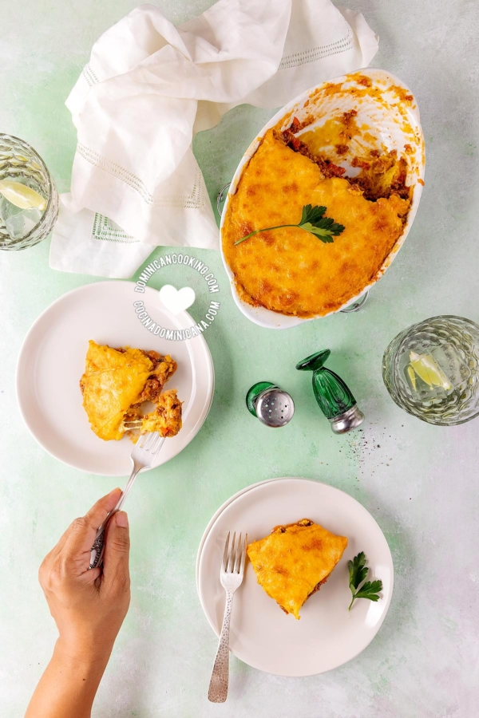

El Pastelón de Plátano Maduro es una de las recetas más populares
en nuestro blog, y como en muchos otras de la cocina dominicana se mezclan sabores salados y dulces.

Ingredientes
Del relleno:
2 cucharadas aceite de oliva
1 cebolla roja
1 cebolla roja pequeña cortada en cubos pequeños
3 dientes ajo majados
1 lb res molida
1 taza salsa de tomate
1 pimiento picado
1 ¼ cucharadita sal
1 cucharadita pimienta
1 ramito cilantro picado
Del pastelón
6 plátanos
1 cucharadita sal
2 cucharadas aceite vegetal
1 taza queso cheddar rallado
¼ taza mantequilla
Pasos Para El Relleno
Cocinar la carne: Calienta el aceite a fuego
medio-bajo. Agrega la cebolla y cuece removiendo hasta que se torne translúcida. Agrega el ajo y
cuece removiendo por un minuto.
Agrega la carne molida y cuece removiendo, presiona para deshacer los grumos y cuece hasta que dore.
Sazonar: Vierte la salsa de tomate y agrega pimiento,
sal y pimienta. Remueve y tapa. Cuece por 3 minutos.
Agregar extra ingrediente: Destapa y mezcla con el
ingrediente opcional que escogiste.
Prueba y sazona con sal y pimiento al gusto si lo encuentras necesario. Retira del fuego.
Pasos Para pastelón de platano maduro
Hervir plátanos: Pela los plátanos, hierve añadiendo 1
cucharadita de sal a suficiente agua para cubrir los plátanos más una pulgada [2.5 cm]. Cuando los
plátanos estén cocidos (unos 15 retira del fuego.
Majar plátanos: Retira los plátanos del agua y májalos
agregando la mantequilla restante hasta que se conviertan en un puré muy suave muy suave.
Hacer pastelón: Unta con el un poco de mantequilla el
fondo de un molde de (6 x 9 pulgadas [15 x 21 cm]). Pon la mitad de los plátanos en el molde de hornear
y distribuye uniformemente con un tenedor.
Cubre con la carne y luego con el plátano restante, distribuyendo en capas uniformes. Espolvorea con el
resto del queso.
Hornear: Hornea en horno precalentado a 350 ºF [175 ºC]
hasta que el queso se dore. Sirve caliente.
Servir: Es más fácil desmoldar si esperas unos 5 minutos
después de sacar del horno.
“Esta receta fue copiada de la página
www.cocinadominicana.com”